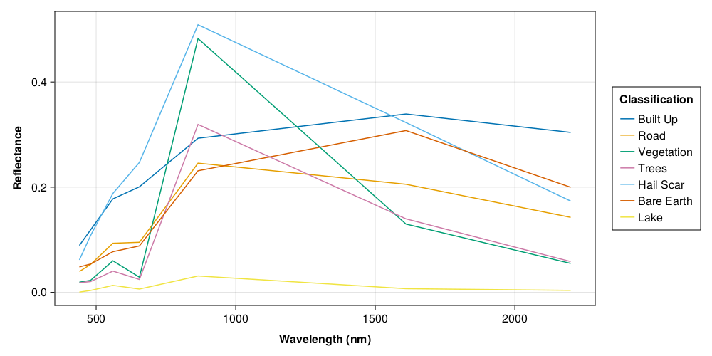
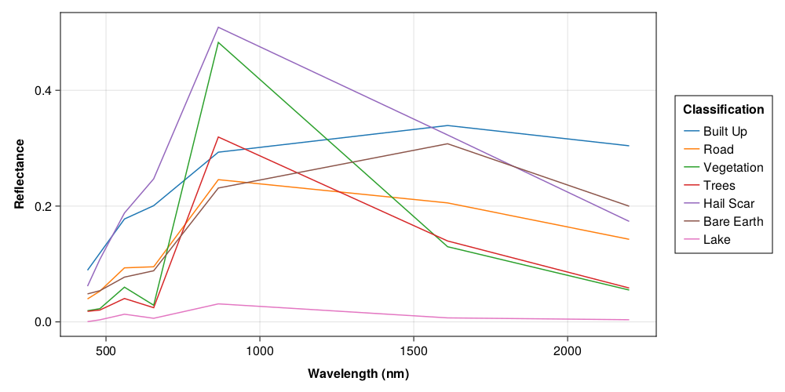
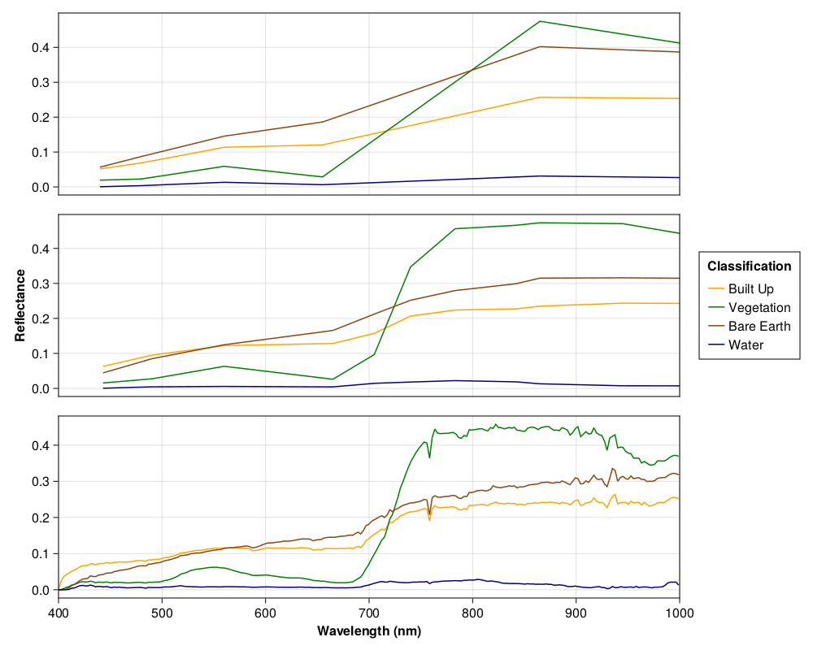

Spectral Analysis Example
A common application of remotely sensed imagery is land cover classification. One method to accomplish this is to analyze the spectral signatures produced by different types of cover. RemoteSensingToolbox provides a number of functions for extracting and visualyzing spectral signatures organized by their associated lan cover.
The first step in our analysis is to load our remotely sensed data and convert the DNs (Digital Numbers) to reflectances. Reflectance is a standardized unit of measurement defined over the interval [0, 1] which denotes the fraction of light that is reflected by the observed surface. A reflectance of 0.0 indicates that no light was reflected whereas a reflectance of 1.0 indicates that 100% of light was reflected.
using RemoteSensingToolbox, DataFrames, Shapefile, CairoMakie
landsat = Landsat8("data/LC08_L2SP_043024_20200802_20200914_02_T1/") |> dn_to_reflectanceNext, we need to load a shapefile which defines some regions containing each type of land cover that we're interested in.
shp = Shapefile.Table("data/landcover/landcover.shp") |> DataFrameExamining the shapefile gives us some idea of how its contents are structured. As we can see, the regions of interest are stored as Polygon objects under the :geometry column, while the land cover types are under :MC_name and :C_name. The :MC_name column defines the macroclass, which in our case are built up land, vegetation, bare earth, and water. The :C_name column defines the specific class to which some land cover belongs. For example, both "Trees" and "Vegetation" belong to the "Vegetation" macroclass.
8×7 DataFrame
Row │ geometry fid MC_ID MC_name C_ID C_name SCP_UID
│ Polygon Missing Int64 String Int64 String String
─────┼──────────────────────────────────────────────────────────────────────────────────────────────
1 │ Polygon(38 Points) missing 1 Built Up 1 Built Up 20230527_122212594060_314
2 │ Polygon(31 Points) missing 1 Built Up 2 Road 20230527_122301732906_304
3 │ Polygon(7 Points) missing 2 Vegetation 3 Vegetation 20230527_122832068862_302
4 │ Polygon(57 Points) missing 2 Vegetation 4 Trees 20230527_123221462871_572
5 │ Polygon(5 Points) missing 3 Bare Earth 5 Hail Scar 20230527_123631491671_937
6 │ Polygon(7 Points) missing 3 Bare Earth 6 Bare Earth 20230527_123727873290_779
7 │ Polygon(7 Points) missing 4 Water 7 Lake 20230527_123931189139_867
8 │ Polygon(5 Points) missing 3 Bare Earth 6 Bare Earth 20230527_125120033074_286To visualize the spectral signatures of each type of land cover, we can call plot_signatures on the raster from which we want to extract the signatures, the shapefile defining the regions of interest, and the column which specifies the class of each polygon. We should note that plot_signatures also expects a BandSet defining the sensor's bands and corresponding central wavelength. However, this information is determined implicitly for AbstractSensor types.
plot_signatures(landsat, shp, :C_name)
We see that we've plotted the signatures for each land cover type in shp. However, we may wish to override the default colors. Fortunately, plot_signatures accepts an optional argument allowing us to specify any colors that we wish.
plot_signatures(landsat, shp, :C_name; colors=cgrad(:tab10))
The plot_signatures! method is nearly identical to plot_signatures, but it expects a Makie.Axis object as its first argument onto which the signatures will be drawn (hence the exclamation). This allows us to create more complicated plots than are supported by plot_signatures. We will demonstrate this capability by plotting the same signatures for three different sensors, each of which passed over our study area within a period of four days. For this reason, we can compare the signatures with a single shapefile, as we do not expect the land cover types to change significantly within this span of time.
# Load Sentinel and DESIS
sentinel = Sentinel2A("data/T11UPT_20200804T183919/") |> dn_to_reflectance
desis = DESIS("data/DESIS-HSI-L2A-DT0483531728_001-20200804T234520-V0210/SPECTRAL_IMAGE.tif") |> dn_to_reflectance
sensors = [landsat, sentinel, desis]
# Create Figure
fig = Figure(resolution=(1000, 800))
# Create Axes
ax1 = Axis(fig[1,1], xticksvisible=false, xticklabelsvisible=false)
ax2 = Axis(fig[2,1], ylabel="Reflectance", ylabelfont=:bold, xticksvisible=false, xticklabelsvisible=false)
ax3 = Axis(fig[3,1], xlabel="Wavelength (nm)", xlabelfont=:bold)
axs = [ax1, ax2, ax3]
# Plot Signatures
colors = cgrad([:orange, :green, :saddlebrown, :navy], 4, categorical=true)
for (sensor, ax) in zip(sensors, axs)
plot_signatures!(ax, sensor, shp, :MC_name; colors=colors)
xlims!(ax, 400, 1000)
end
# Add Legend
Legend(fig[1:3,2], first(axs), "Classification")